Tees
DeWalt
"DeWalt Challenge — Take It!" — FOTL, single stitch
$13.71
Same promo as the $19.20 card, no stain listed. Clean Hanes copy also $24.88 on eBay (~24″ pit).
View listingMilwaukee
90s Electric Tools "Made in the USA" flag, single stitch
$15.29
Cheapest real Milwaukee yet. Measurements in photos; price includes Depop fees.
View listingDeWalt
"DeWalt Challenge — Take It!" — Hanes Beefy-T
$19.20 OBO
"Cordless. Not Gutless." back print. Small front stain.
View listingBlack & Decker
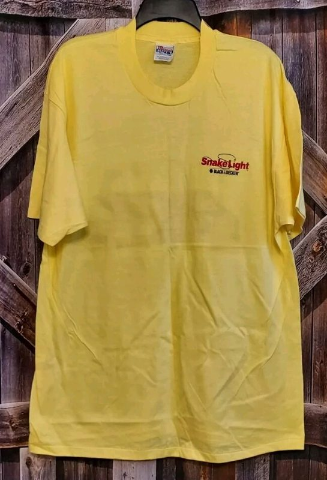
1995 Snake Light North American Tour — Hanes Beefy-T
$19.88 OBO
Never worn, kept sealed. Small chest print only.
View listingMilwaukee
90s Electric Tools pocket promo
$19.99 OBO
Light print cracking. Cheapest real Milwaukee on the market.
View listingMilwaukee
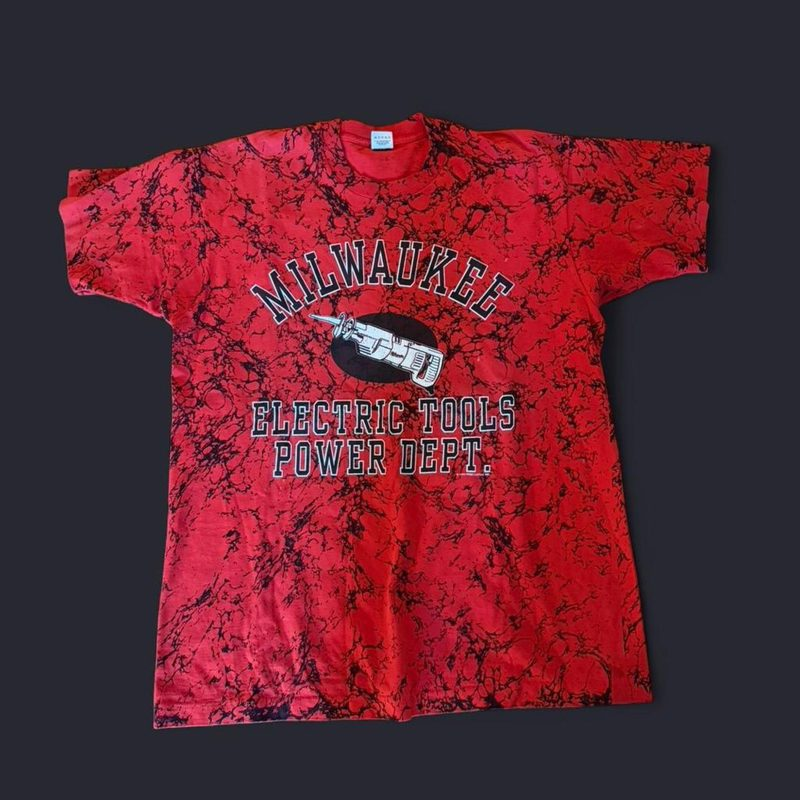
90s Electric Tools "Power Dept." — FOTL
$21.59
Old wordmark and a Sawzall. Marble-dyed red, so it's a taste call.
View listingDeWalt
90s "High Performance Industrial Tools" logo, yellow
$28.94
Early-90s relaunch wording. Price includes Depop fees.
View listingDeWalt
Black & Decker
90s Hammer Drill promo — FOTL
$39.99 OBO
One of ~6 real vintage B&D pieces on the whole market.
View listingMilwaukee
90s Electric Tools — K-Products, single stitch
$40
The reference Milwaukee tee: period maker, period wording.
View listingStihl
1985 "Stihl's The One!" — Jerzees 50/50
$49.95
Thin-supply brand; real Stihl doesn't linger.
View listingCrewnecks
Bosch
Milwaukee
90s "Genuine Milwaukee American" chest logo — FOTL
$31.98
Faded navy. Price includes Depop fees.
View listingDeWalt
90s Lee Superblend, embroidered
$32
Title says black, specifics say gray — ask before buying.
View listingIngersoll-Rand
"The Fastest Gun Around" — Jerzees Super Sweats
$34.95 OBO
Same blank family as the Bama grail. Excellent.
View listingCraftsman
Milwaukee
90s Electric Tools graphic — FOTL, black
$129.95 OBO
Best Milwaukee crew on the market; over band — open with an offer.
View listingWatch list real, but overpriced or unresolved
Klein Tools
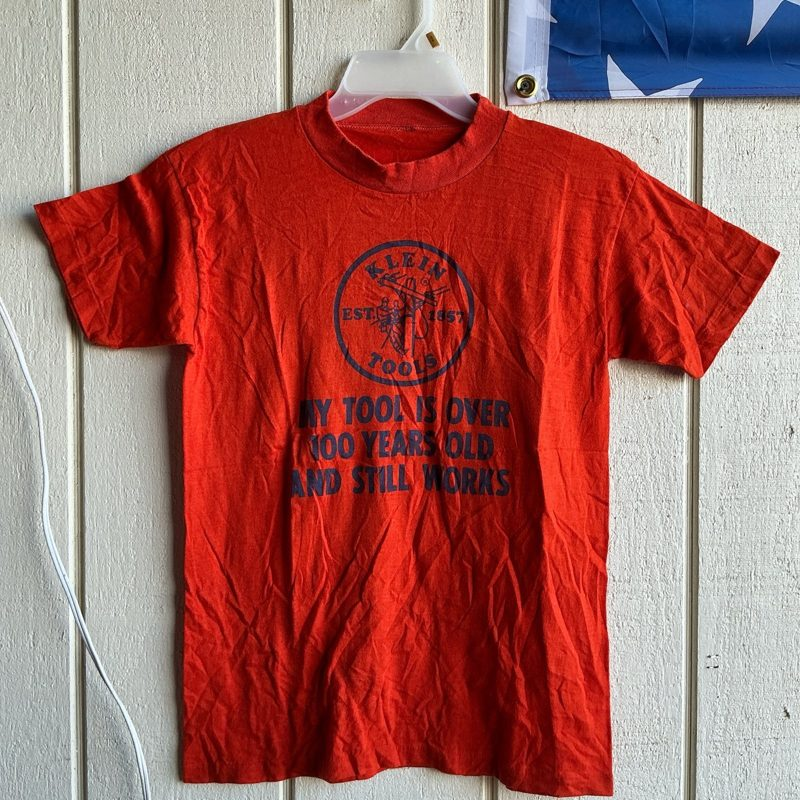
Orange "My Tools Are Over 100 Years Old"
$40
Only possibly-vintage Klein that could fit. Ask pit-to-pit; the seller has a condition complaint on Depop.
View listingHusqvarna
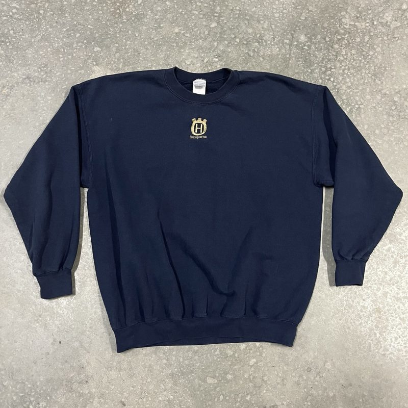
Embroidered crown logo crewneck
$24.99 OBO
Plain logo, some fading; no tag date. A 24″-pit twin is $35.95.
View listingHusqvarna
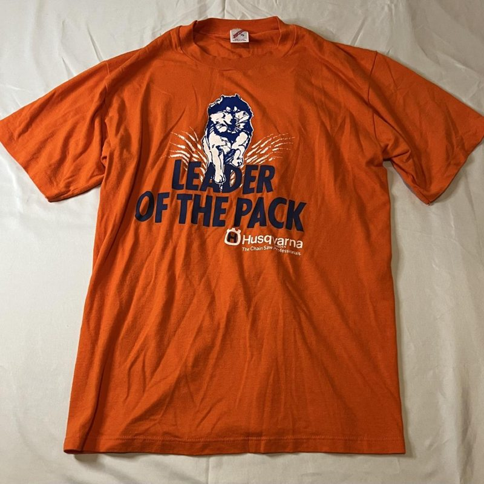
80s "Leader Of The Pack" — Jerzees
$39.44
The reference Husqvarna piece, offers on; about $28 makes it a hit. An XL Screen Stars copy is $88.99.
View listingStihl
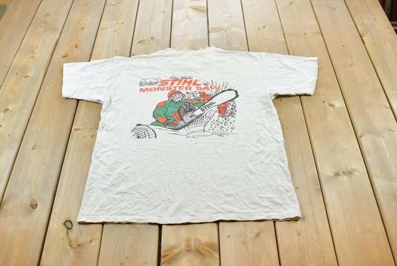
Stihl
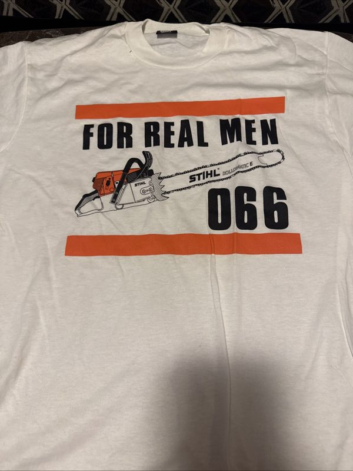
Hitachi
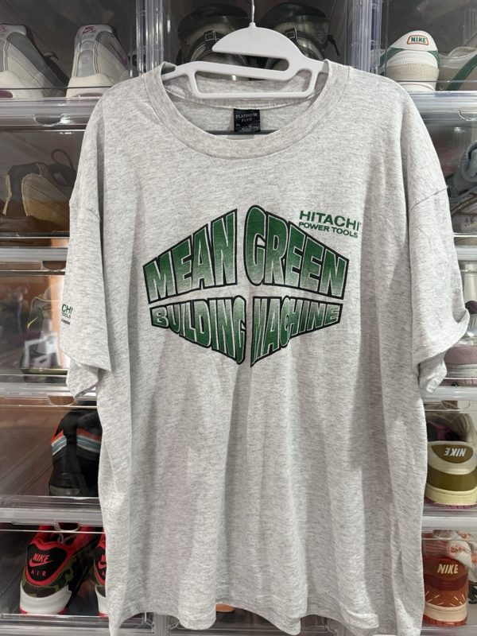
90s "Mean Green Building Machine"
£30 OBO
UK seller. Black copy on Mercari Japan is 21.9″ and stained.
View listingHilti
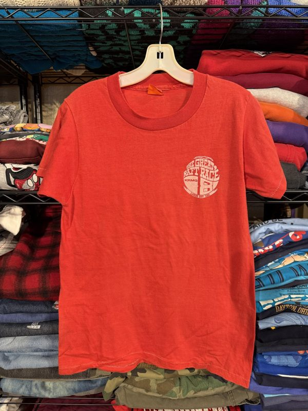
Bosch
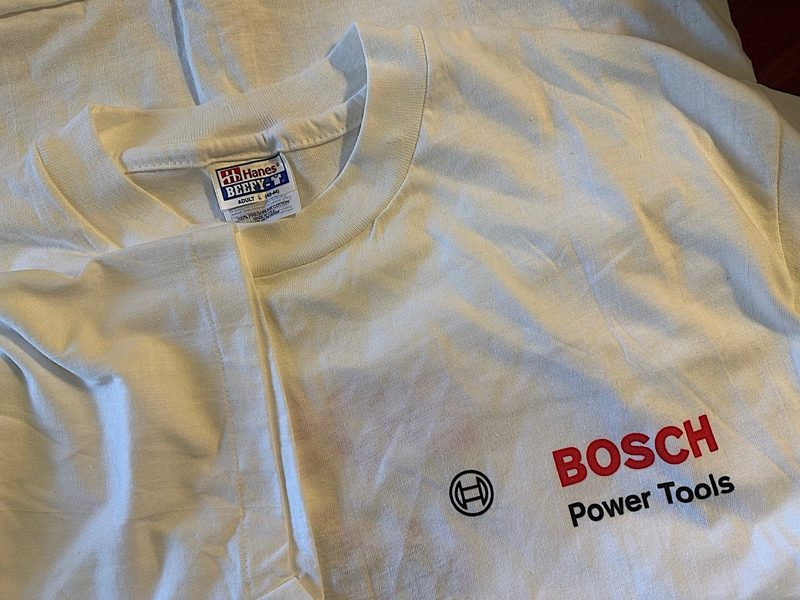
CAT
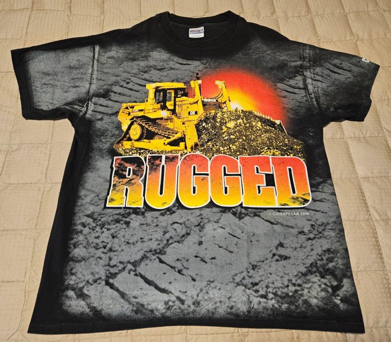
1996 D10R "Rugged" all-over print — Hanes
$49.95 OBO
Fair: the same design lists at $125 elsewhere.
View listingCAT
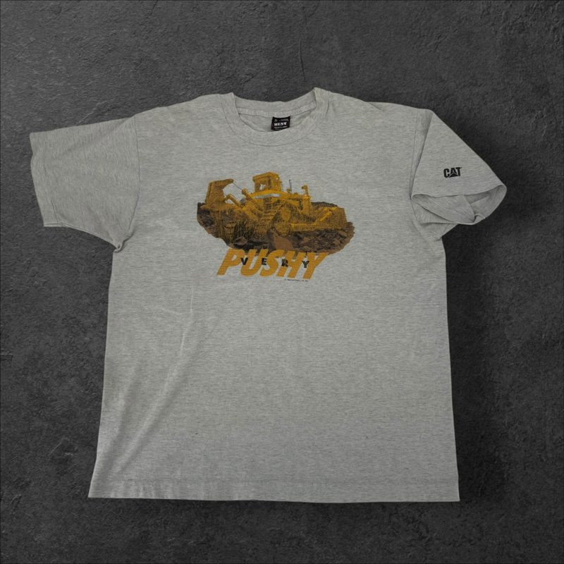
Milwaukee
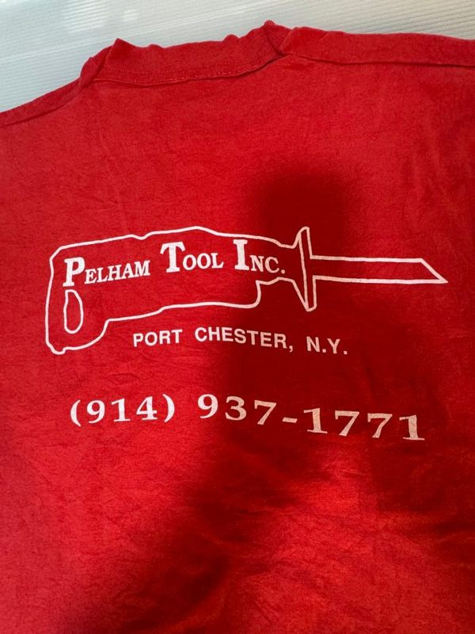
Late-80s Pelham Tool dealer tee, Port Chester NY
¥9,800
An inch wide of band; needs a proxy (~$90 landed).
View listingGrails logged wrong size or wrong price — kept as proof of what exists
Milwaukee
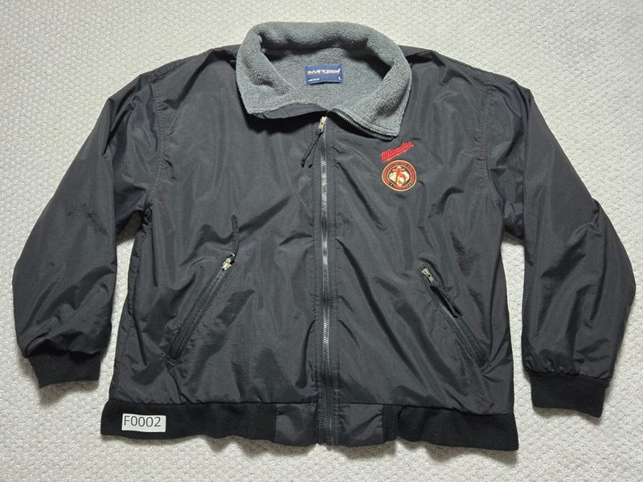
Milwaukee
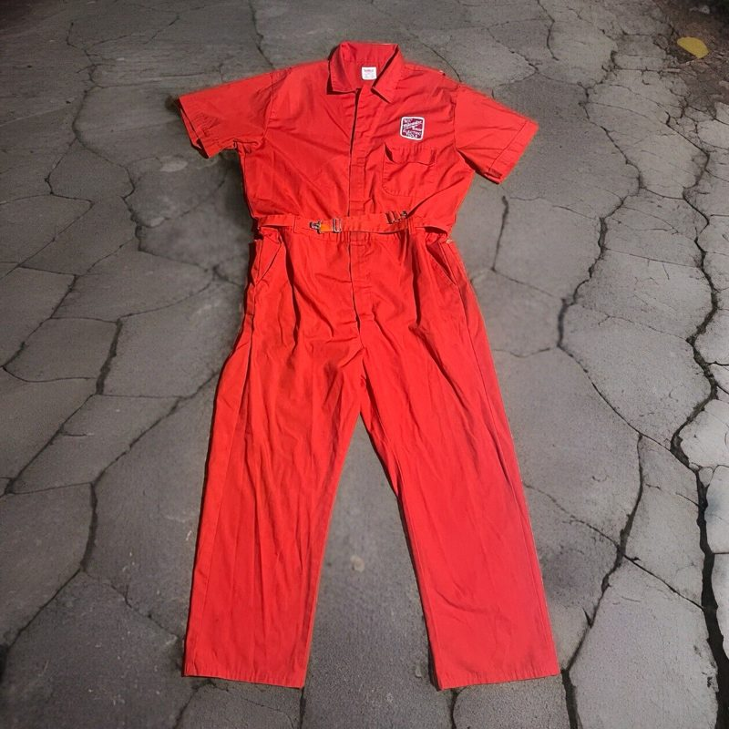
Klein Tools
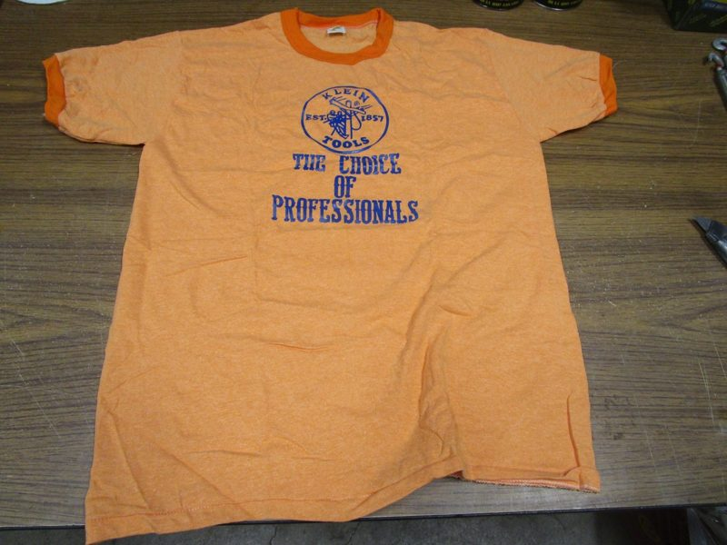
70s "The Choice of Professionals" — Russell, NOS
$45
Too small, but proof the design exists.
View listing